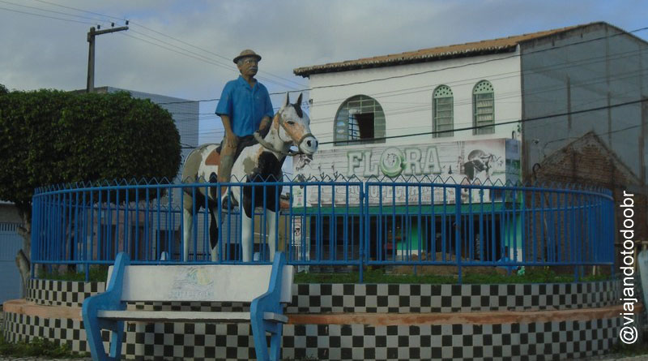

Porto da Folha
História
O Município teve sua origem no século XVII, havendo sua sede passado por uma série de mudanças: Ilha do Ouro, Porto Principal, Ilha de São Pedro no rio São Francisco, Curral de Pedras (atual Gararu), e Boa Vista para, finalmente, se fixar na fazenda Curral do Buraco, onde se estabelecera o colonizador Tomáz Bermudes que fizera amizade com os índios Romaris ou Reumirins.
Com a morte do colonizador a obra de povoamento continuou com Gerônimo Fernandes, seu sucessor, e a povoação floresceu a ponto de em 1821 ser desmembrada da freguesia de Santo Antônio do Urubu de Baixo (atual Propriá) já denominado São Pedro do Porto da Folha com sede na Ilha de São Pedro.
Em 1841 foi restabelecida a sede no povoado do Curral do Buraco, sob a invocação de Nossa Senhora da Conceição do Porto da Folha, até que a Lei nº 194 de 11 de fevereiro de 1896, definiu a sede com a denominação de Porto da Folha, cujos portofolhenses também possuem a antonomásia de buraqueiros.
fonte: https://www.portodafolha.se.gov.br/Pontos Turísticos
Ilha do Ouro
Turisticamente falando, a região possui diversos atrativos à beira do rio São Francisco. A ilha do Ouro e os povoados Niterói e Mocambo, este último, comunidade quilombola, símbolo da resistência de lutas negras em Sergipe.
No Quilombo Mocambo, comunidade rural que teve em sua origem uma história de luta pelo território, o samba de coco é o símbolo da cultura local e há um nascedouro de um projeto de turismo de base comunitária, através do qual os moradores se uniram para trabalhar de forma organizada, oferecendo serviços de hospedagem, alimentação e monitoramento de grupos.
Ilha de São Pedro
A Ilha de São Pedro não fica perto da sede municipal e dista cerca de 220 km de Aracaju, mas é lá onde o olhar do empreendedor vislumbra uma forte atratividade para o turismo de base comunitária por ser uma região entrecortada por braços do rio São Francisco, abrigando a única aldeia e escola indígena de Sergipe.
A beleza da região, em consonância com o bioma de caatinga, além de ruínas de construções jesuíticas e indígenas, confere paisagens de encher os olhos. Na Ilha, denominada também de Caiçara, está fincada a igreja São Pedro, tombada pelo Patrimônio Histórico Estadual, além de um cemitério indígena.
Dados Gerais de acordo com o IBGE
| Prefeito (a) | Miguel de Dr Marcos |
| Vice-Prefeito (a) | Ailton De Ze Doutor |
| Site do município | https://www.portodafolha.se.gov.br/ |
| Área territorial | 877 km² |
| População estimada | 28.693 pessoas |
| Densidade demográfica | 32,7 hab./km² |
| IDHM | 0,568 |
| PIB per capita | R$ 6.058,43 |